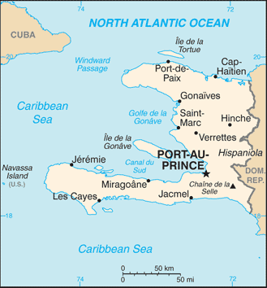
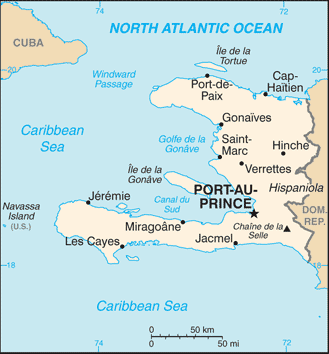

-
Introduction :: Haiti
-
Background:The native Taino - who inhabited the island of Hispaniola when it was discovered by Christopher COLUMBUS in 1492 - were virtually annihilated by Spanish settlers within 25 years. In the early 17th century, the French established a presence on Hispaniola. In 1697, Spain ceded to the French the western third of the island, which later became Haiti. The French colony, based on forestry and sugar-related industries, became one of the wealthiest in the Caribbean but only through the heavy importation of African slaves and considerable environmental degradation. In the late 18th century, Haiti's nearly half million slaves revolted under Toussaint L'OUVERTURE. After a prolonged struggle, Haiti became the first post-colonial black-led nation in the world, declaring its independence in 1804. Currently the poorest country in the Western Hemisphere, Haiti has experienced political instability for most of its history. A massive magnitude 7.0 earthquake struck Haiti in January 2010 with an epicenter about 25 km (15 mi) west of the capital, Port-au-Prince. Estimates are that over 300,000 people were killed and some 1.5 million left homeless. The earthquake was assessed as the worst in this region over the last 200 years. President Michel MARTELLY resigned in February 2016 and was replaced by Interim President Jocelerme PRIVERT. President Jovenel MOISE won the November 2016 elections and assumed office in February 2017.HAITI SUMMARY: PDF
-
Geography :: Haiti
-
Location:Caribbean, western one-third of the island of Hispaniola, between the Caribbean Sea and the North Atlantic Ocean, west of the Dominican RepublicGeographic coordinates:19 00 N, 72 25 WMap references:Central America and the CaribbeanArea:total: 27,750 sq kmland: 27,560 sq kmwater: 190 sq kmcountry comparison to the world: 148Area - comparative:slightly smaller than MarylandLand boundaries:total: 376 kmborder countries (1): Dominican Republic 376 kmCoastline:1,771 kmMaritime claims:territorial sea: 12 nmexclusive economic zone: 200 nmcontiguous zone: 24 nmcontinental shelf: to depth of exploitationClimate:tropical; semiarid where mountains in east cut off trade windsTerrain:mostly rough and mountainousElevation:mean elevation: 470 melevation extremes: 0 m lowest point: Caribbean Sea2680 highest point: Chaine de la SelleNatural resources:bauxite, copper, calcium carbonate, gold, marble, hydropower, arable landLand use:agricultural land: 66.4% (2011 est.)arable land: 38.5% (2011 est.) / permanent crops: 10.2% (2011 est.) / permanent pasture: 17.7% (2011 est.)forest: 3.6% (2011 est.)other: 30% (2011 est.)Irrigated land:970 sq km (2012)Population distribution:fairly even distribution; largest concentrations located near coastal areasNatural hazards:lies in the middle of the hurricane belt and subject to severe storms from June to October; occasional flooding and earthquakes; periodic droughtsEnvironment - current issues:extensive deforestation (much of the remaining forested land is being cleared for agriculture and used as fuel); soil erosion; overpopulation leads to inadequate supplies of potable water and and a lack of sanitation; natural disastersEnvironment - international agreements:party to: Biodiversity, Climate Change, Climate Change-Kyoto Protocol, Desertification, Law of the Sea, Marine Dumping, Marine Life Conservation, Ozone Layer Protectionsigned, but not ratified: Hazardous WastesGeography - note:shares island of Hispaniola with Dominican Republic (western one-third is Haiti, eastern two-thirds is the Dominican Republic); it is the most mountainous nation in the Caribbean
-
People and Society :: Haiti
-
Population:10,788,440 (July 2018 est.)
note: estimates for this country explicitly take into account the effects of excess mortality due to AIDS; this can result in lower life expectancy, higher infant mortality, higher death rates, lower population growth rates, and changes in the distribution of population by age and sex than would otherwise be expected
country comparison to the world: 83Nationality:noun: Haitian(s)adjective: HaitianEthnic groups:black 95%, mixed and white 5%Languages:French (official), Creole (official)Religions:Roman Catholic 54.7%, Protestant 28.5% (Baptist 15.4%, Pentecostal 7.9%, Adventist 3%, Methodist 1.5%, other 0.7%), vodou 2.1%, other 4.6%, none 10.2% (2003 est.)note: many Haitians practice elements of vodou in addition to another religion, most often Roman Catholicism; vodou was recognized as an official religion in 2003
Age structure:0-14 years: 32.27% (male 1,733,920 /female 1,747,387)15-24 years: 21.11% (male 1,139,188 /female 1,137,754)25-54 years: 37.32% (male 1,997,816 /female 2,028,495)55-64 years: 5.1% (male 262,494 /female 287,515)65 years and over: 4.21% (male 199,617 /female 254,254) (2018 est.)population pyramid: The World Factbook Field Image ModalCentral America :: Haiti Print
The World Factbook Field Image ModalCentral America :: Haiti Print Image DescriptionThis is the population pyramid for Haiti. A population pyramid illustrates the age and sex structure of a country's population and may provide insights about political and social stability, as well as economic development. The population is distributed along the horizontal axis, with males shown on the left and females on the right. The male and female populations are broken down into 5-year age groups represented as horizontal bars along the vertical axis, with the youngest age groups at the bottom and the oldest at the top. The shape of the population pyramid gradually evolves over time based on fertility, mortality, and international migration trends.
Image DescriptionThis is the population pyramid for Haiti. A population pyramid illustrates the age and sex structure of a country's population and may provide insights about political and social stability, as well as economic development. The population is distributed along the horizontal axis, with males shown on the left and females on the right. The male and female populations are broken down into 5-year age groups represented as horizontal bars along the vertical axis, with the youngest age groups at the bottom and the oldest at the top. The shape of the population pyramid gradually evolves over time based on fertility, mortality, and international migration trends.
For additional information, please see the entry for Population pyramid on the Definitions and Notes page under the References tab.Dependency ratios:total dependency ratio: 62.3 (2015 est.)youth dependency ratio: 54.8 (2015 est.)elderly dependency ratio: 7.5 (2015 est.)potential support ratio: 13.3 (2015 est.)Median age:total: 23.3 yearsmale: 23.1 yearsfemale: 23.6 years (2018 est.)country comparison to the world: 172Population growth rate:1.31% (2018 est.)country comparison to the world: 84Birth rate:22.6 births/1,000 population (2018 est.)country comparison to the world: 65Death rate:7.5 deaths/1,000 population (2018 est.)country comparison to the world: 111Net migration rate:-2 migrant(s)/1,000 population (2017 est.)country comparison to the world: 162Population distribution:fairly even distribution; largest concentrations located near coastal areasUrbanization:urban population: 55.3% of total population (2018)rate of urbanization: 2.9% annual rate of change (2015-20 est.)Major urban areas - population:2.637 million PORT-AU-PRINCE (capital) (2018)Sex ratio:at birth: 1 male(s)/female (2017 est.)0-14 years: 0.99 male(s)/female (2017 est.)15-24 years: 1 male(s)/female (2017 est.)25-54 years: 0.99 male(s)/female (2017 est.)55-64 years: 0.91 male(s)/female (2017 est.)65 years and over: 0.81 male(s)/female (2017 est.)total population: 0.98 male(s)/female (2017 est.)Mother's mean age at first birth:22.8 years (2016/7 est.)note: median age at first birth among women 25-29
Maternal mortality rate:359 deaths/100,000 live births (2015 est.)country comparison to the world: 33Infant mortality rate:total: 45.4 deaths/1,000 live births (2018 est.)male: 51.5 deaths/1,000 live births (2018 est.)female: 39.2 deaths/1,000 live births (2018 est.)country comparison to the world: 35Life expectancy at birth:total population: 64.6 years (2018 est.)male: 61.9 years (2018 est.)female: 67.2 years (2018 est.)country comparison to the world: 186Total fertility rate:2.66 children born/woman (2018 est.)country comparison to the world: 65Contraceptive prevalence rate:34.3% (2016/17)Health expenditures:7.6% of GDP (2014)country comparison to the world: 63Hospital bed density:0.7 beds/1,000 population (2013)Drinking water source:improved: urban: 64.9% of populationrural: 47.6% of populationtotal: 57.7% of populationunimproved: urban: 35.1% of populationrural: 52.4% of populationtotal: 42.3% of population (2015 est.)Sanitation facility access:improved: urban: 33.6% of population (2015 est.)rural: 19.2% of population (2015 est.)total: 27.6% of population (2015 est.)unimproved: urban: 66.4% of population (2015 est.)rural: 80.8% of population (2015 est.)total: 72.4% of population (2015 est.)HIV/AIDS - adult prevalence rate:1.9% (2017 est.)country comparison to the world: 27HIV/AIDS - people living with HIV/AIDS:150,000 (2017 est.)country comparison to the world: 32HIV/AIDS - deaths:4,700 (2017 est.)country comparison to the world: 30Major infectious diseases:degree of risk: very high (2016)food or waterborne diseases: bacterial and protozoal diarrhea, hepatitis A and E, and typhoid fever (2016)vectorborne diseases: dengue fever and malaria (2016)note: active local transmission of Zika virus by Aedes species mosquitoes has been identified in this country (as of August 2016); it poses an important risk (a large number of cases possible) among US citizens if bitten by an infective mosquito; other less common ways to get Zika are through sex, via blood transfusion, or during pregnancy, in which the pregnant woman passes Zika virus to her fetus
Obesity - adult prevalence rate:22.7% (2016)country comparison to the world: 72Children under the age of 5 years underweight:11.6% (2012)country comparison to the world: 57Education expenditures:NALiteracy:definition: age 15 and over can read and write (2015 est.)total population: 60.7% (2015 est.)male: 64.3% (2015 est.)female: 57.3% (2015 est.) -
Government :: Haiti
-
Country name:conventional long form: Republic of Haiticonventional short form: Haitilocal long form: Republique d'Haiti/Repiblik d Ayitilocal short form: Haiti/Ayitietymology: the native Taino name means "Land of High Mountains" and was originally applied to the entire island of HispaniolaGovernment type:semi-presidential republicCapital:name: Port-au-Princegeographic coordinates: 18 32 N, 72 20 Wtime difference: UTC-5 (same time as Washington, DC, during Standard Time)daylight saving time: +1hr, begins second Sunday in March; ends first Sunday in NovemberAdministrative divisions:10 departments (departements, singular - departement); Artibonite, Centre, Grand'Anse, Nippes, Nord, Nord-Est, Nord-Ouest, Ouest, Sud, Sud-EstIndependence:1 January 1804 (from France)National holiday:Independence Day, 1 January (1804)Constitution:history: many previous; latest adopted 10 March 1987 (2018)amendments: proposed by the executive branch or by either the Senate or the Chamber of Deputies; consideration of proposed amendments requires support by at least two-thirds majority of both houses; passage requires at least two-thirds of the membership present and at least two-thirds majority of the votes cast; approved amendments enter into force after installation of the next president of the republic; constitutional articles on the democratic and republican form of government cannot be amended; amended 2011, 2012 (2018)Legal system:civil law system strongly influenced by Napoleonic CodeInternational law organization participation:accepts compulsory ICJ jurisdiction; non-party state to the ICCtCitizenship:citizenship by birth: nocitizenship by descent only: at least one parent must be a native-born citizen of Haitidual citizenship recognized: noresidency requirement for naturalization: 5 yearsSuffrage:18 years of age; universalJudicial branch:highest courts: Supreme Court or Cour de Cassation (consists of a chief judge and other judges); note - Haiti is a member of the Caribbean Court of Justicejudge selection and term of office: judges appointed by the president from candidate lists submitted by the Senate of the National Assembly; note - Article 174 of the Haiti Constitution states that judges of the Supreme Court are appointed for 10 years, whereas Article 177 states that judges of the Supreme Court are appointed for lifesubordinate courts: Courts of Appeal; Courts of First Instance; magistrates' courts; special courtsExecutive branch:chief of state: President Jovenel MOISE (since 7 February 2017)head of government: Prime Minister Jean Henry CEANT (since 16 September 2018); note - Prime Minister Dr. Jack Guy LAFONTANT (since 21 March 2017) resigned on 14 July 2018, after plans to raise fuel prices sparked riotscabinet: Cabinet chosen by the prime minister in consultation with the president; parliament must ratify the Cabinet and Prime Minister's governing policyelections/appointments: president directly elected by absolute majority popular vote in 2 rounds if needed for a 5-year term (eligible for a single non-consecutive term); last election originally scheduled for 9 October 2016 but postponed until 20 November 2016 due to Hurricane Matthewelection results: Jovenel MOISE elected president in first round; percent of vote - Jovenel MOISE (PHTK) 55.6%, Jude CELESTIN (LAPEH) 19.6%, Jean-Charles MOISE (PPD) 11%, Maryse NARCISSE (FL) 9%; other 4.8%Legislative branch:description: bicameral legislature or le Corps Legislatif ou parlement consists of:
le Senat or Senate (30 seats; members directly elected in multi-seat constituencies by absolute majority vote in 2 rounds if needed; members serve 6-year terms with one-third of the membership renewed every 2 years)
la Chambre de deputes or Chamber of Deputies (119 seats; members directly elected in single-seat constituencies by absolute majority vote in 2 rounds if needed; members serve 4-year terms); note - when the 2 chambers meet collectively it is known as L'Assemblee Nationale or the National Assembly and is convened for specific purposes spelled out in the constitutionelections:
Senate - last held on 20 November 2016 with runoff on 29 January 2017 (next election scheduled for October 2019);
Chamber of Deputies - last held on 9 August 2015 with runoff elections held on 25 October 2015 and 20 November 2016 (next election scheduled for October 2019); note - the 9 October 2016 election for both the Senate and Chamber of Deputies was rescheduled for 20 November 2016 due to Hurricane Matthewelection results:
Senate - percent of vote by party - NA; seats by party - NA
Chamber of Deputies - percent of vote by party - NA; seats by party - NAPolitical parties and leaders:Alternative League for Haitian Progress and Empowerment or LAPEH [Jude CELESTIN]
Christian Movement for a New Haiti or MCNH [Luc MESADIEU]
Christian National Movement for the Reconstruction of Haiti or UNCRH [Chavannes JEUNE]
Convention for Democratic Unity or KID [Evans PAUL]
Cooperative Action to Rebuild Haiti or KONBA [Jean William JEANTY]
December 16 Platform or Platfom 16 Desanm [Dr. Gerard BLOT]
Democratic Alliance Party or ALYANS [Evans PAUL] (coalition includes KID and PPRH)
Democratic Centers' National Council or CONACED [Osner FEVRY]
Dessalinian Patriotic and Popular Movement or MOPOD [Jean Andre VICTOR]
Effort and Solidarity to Create an Alternative for the People or ESKAMP [Joseph JASME]
Fanmi Lavalas or FL [Jean-Bertrand ARISTIDE]
For Us All or PONT [Jean-Marie CHERESTAL]
Fusion of Haitian Social Democrats or FHSD [Edmonde Supplice BEAUZILE]
Grouping of Citizens for Hope or RESPE [Charles-Henri BAKER]
Haitians for Haiti [Yvon NEPTUNE]
Haitian Tet Kale Party or PHTK [Ann Valerie Timothee MILFORT]
Haiti in Action or AAA [Youri LATORTUE]
Independent Movement for National Reconstruction or MIRN [Luc FLEURINORD]
Konbit Pou refe Ayiti or KONBIT
Lavni Organization or LAVNI [Yves CRISTALIN]
Liberal Party of Haiti or PLH [Jean Andre VICTOR]
Love Haiti or Renmen Ayiti [Jean-Henry CEANT, Camille LEBLANC]
Mobilization for National Development or MDN [Hubert de RONCERAY]
New Christian Movement for a New Haiti or MOCHRENA [Luc MESADIEU]
Organization for the Advancement of Haiti and Haitians or OLAHH
Party for the Integral Advancement of the Haitian People or PAIPH
Patriotic Unity or IP [Marie Denise CLAUDE]
Peasant's Response or Repons Peyizan [Michel MARTELLY]
Platform Alternative for Progress and Democracy or ALTENATIV [Victor BENOIT and Evans PAUL]
Platform of Haitian Patriots or PLAPH [Dejean BELISAIRE, Himmler REBU]
Platform Pitit Desaline or PPD [Jean-Charles MOISE]
Pont
Popular Party for the Renewal of Haiti or PPRH [Claude ROMAIN]
PPG18
Rally of Progressive National Democrats or RDNP [Mirlande MANIGAT]
Renmen Ayiti or RA [Jean-Henry CEANT]
Reseau National Bouclier or Bouclier
Respect or RESPE
Strength in Unity or Ansanm Nou Fo [Leslie VOLTAIRE]
Struggling People's Organization or OPL [Jacques-Edouard ALEXIS]
Truth (Verite)
Union [Chavannes JEUNE]
Unity or Inite [Levaillant LOUIS-JEUNE]
Vigilance or Veye Yo [Lavarice GAUDIN]International organization participation:ACP, AOSIS, Caricom, CD, CDB, CELAC, FAO, G-77, IADB, IAEA, IBRD, ICAO, ICC (NGOs), ICRM, IDA, IFAD, IFC, IFRCS, ILO, IMF, IMO, Interpol, IOC, IOM, IPU, ITSO, ITU, ITUC (NGOs), LAES, MIGA, NAM, OAS, OIF, OPANAL, OPCW, PCA, Petrocaribe, UN, UNCTAD, UNESCO, UNIDO, Union Latina, UNWTO, UPU, WCO, WFTU (NGOs), WHO, WIPO, WMO, WTODiplomatic representation in the US:chief of mission: Ambassador Paul Getty ALTIDOR (since 2 May 2012)chancery: 2311 Massachusetts Avenue NW, Washington, DC 20008telephone: [1] (202) 332-4090FAX: [1] (202) 745-7215consulate(s) general: Atlanta, Boston, Chicago, Miami, Orlando (FL), New York, San Juan (Puerto Rico)Diplomatic representation from the US:chief of mission: Ambassador Michele SISON (since 21 February 2018)embassy: Tabarre 41, Route de Tabarre, Port-au-Princemailing address: (in Haiti) P.O. Box 1634, Port-au-Prince, Haiti; (from abroad) 3400 Port-au-Prince, State Department, Washington, DC 20521-3400telephone: [509] 229-8000FAX: [509] 229-8028Flag description:two equal horizontal bands of blue (top) and red with a centered white rectangle bearing the coat of arms, which contains a palm tree flanked by flags and two cannons above a scroll bearing the motto L'UNION FAIT LA FORCE (Union Makes Strength); the colors are taken from the French Tricolor and represent the union of blacks and mulattoesNational symbol(s):Hispaniolan trogon (bird), hibiscus flower; national colors: blue, redNational anthem:name: "La Dessalinienne" (The Dessalines Song)lyrics/music: Justin LHERISSON/Nicolas GEFFRARDnote: adopted 1904; named for Jean-Jacques DESSALINES, a leader in the Haitian Revolution and first ruler of an independent Haiti
-
Economy :: Haiti
-
Economy - overview:
Haiti is a free market economy with low labor costs and tariff-free access to the US for many of its exports. Two-fifths of all Haitians depend on the agricultural sector, mainly small-scale subsistence farming, which remains vulnerable to damage from frequent natural disasters. Poverty, corruption, vulnerability to natural disasters, and low levels of education for much of the population represent some of the most serious impediments to Haiti’s economic growth. Remittances are the primary source of foreign exchange, equivalent to more than a quarter of GDP, and nearly double the combined value of Haitian exports and foreign direct investment.
Currently the poorest country in the Western Hemisphere, with close to 60% of the population living under the national poverty line, Haiti’s GDP growth rose to 5.5% in 2011 as the Haitian economy began recovering from the devastating January 2010 earthquake that destroyed much of its capital city, Port-au-Prince, and neighboring areas. However, growth slowed to below 2% in 2015 and 2016 as political uncertainty, drought conditions, decreasing foreign aid, and the depreciation of the national currency took a toll on investment and economic growth. Hurricane Matthew, the fiercest Caribbean storm in nearly a decade, made landfall in Haiti on 4 October 2016, with 140 mile-per-hour winds, creating a new humanitarian emergency. An estimated 2.1 million people were affected by the category 4 storm, which caused extensive damage to crops, houses, livestock, and infrastructure across Haiti’s southern peninsula.
US economic engagement under the Caribbean Basin Trade Partnership Act (CBTPA) and the 2008 Haitian Hemispheric Opportunity through Partnership Encouragement Act (HOPE II) have contributed to an increase in apparel exports and investment by providing duty-free access to the US. The Haiti Economic Lift Program (HELP) Act of 2010 extended the CBTPA and HOPE II until 2020, while the Trade Preferences Extension Act of 2015 extended trade benefits provided to Haiti in the HOPE and HELP Acts through September 2025. Apparel sector exports in 2016 reached approximately $850 million and account for over 90% of Haitian exports and more than 10% of the GDP.
Investment in Haiti is hampered by the difficulty of doing business and weak infrastructure, including access to electricity. Haiti's outstanding external debt was cancelled by donor countries following the 2010 earthquake, but has since risen to $2.6 billion as of December 2017, the majority of which is owed to Venezuela under the PetroCaribe program. Although the government has increased its revenue collection, it continues to rely on formal international economic assistance for fiscal sustainability, with over 20% of its annual budget coming from foreign aid or direct budget support.
GDP (purchasing power parity):$19.97 billion (2017 est.)$19.74 billion (2016 est.)$19.46 billion (2015 est.)note: data are in 2017 dollars
country comparison to the world: 150GDP (official exchange rate):$8.608 billion (2017 est.) (2017 est.)GDP - real growth rate:1.2% (2017 est.)1.5% (2016 est.)1.2% (2015 est.)country comparison to the world: 181GDP - per capita (PPP):$1,800 (2017 est.)$1,800 (2016 est.)$1,800 (2015 est.)note: data are in 2017 dollars
country comparison to the world: 213Gross national saving:24.9% of GDP (2017 est.)29.5% of GDP (2016 est.)29.3% of GDP (2015 est.)country comparison to the world: 61GDP - composition, by end use:household consumption: 99.1% (2017 est.)government consumption: 10% (2016 est.)investment in fixed capital: 32.6% (2016 est.)investment in inventories: -1.4% (2017 est.)exports of goods and services: 20% (2017 est.)imports of goods and services: -60.3% (2017 est.)note: figure for household consumption also includes government consumption
GDP - composition, by sector of origin:agriculture: 22.1% (2017 est.)industry: 20.3% (2017 est.)services: 57.6% (2017 est.)Agriculture - products:coffee, mangoes, cocoa, sugarcane, rice, corn, sorghum; wood, vetiverIndustries:textiles, sugar refining, flour milling, cement, light assembly using imported partsIndustrial production growth rate:0.9% (2017 est.)country comparison to the world: 161Labor force:4.594 million (2014 est.)note: shortage of skilled labor; unskilled labor abundant
country comparison to the world: 88Labor force - by occupation:agriculture: 38.1%industry: 11.5%services: 50.4% (2010)Unemployment rate:40.6% (2010 est.)note: widespread unemployment and underemployment; more than two-thirds of the labor force do not have formal jobs
country comparison to the world: 215Population below poverty line:58.5% (2012 est.)Distribution of family income - Gini index:60.8 (2012)59.2 (2001)country comparison to the world: 4Budget:revenues: 1.567 billion (2017 est.)expenditures: 1.65 billion (2017 est.)Taxes and other revenues:18.2% (of GDP) (2017 est.)country comparison to the world: 163Budget surplus (+) or deficit (-):-1% (of GDP) (2017 est.)country comparison to the world: 79Public debt:31.1% of GDP (2017 est.)33.9% of GDP (2016 est.)country comparison to the world: 164Fiscal year:1 October - 30 SeptemberInflation rate (consumer prices):14.7% (2017 est.)13.4% (2016 est.)country comparison to the world: 211Commercial bank prime lending rate:13.1% (31 December 2017 est.)13.23% (31 December 2016 est.)country comparison to the world: 58Stock of narrow money:$1.273 billion (31 December 2017 est.)$1.049 billion (31 December 2016 est.)country comparison to the world: 151Stock of broad money:$1.273 billion (31 December 2017 est.)$1.049 billion (31 December 2016 est.)country comparison to the world: 156Stock of domestic credit:$3.112 billion (31 December 2017 est.)$2.253 billion (31 December 2016 est.)country comparison to the world: 138Current account balance:-$348 million (2017 est.)-$83 million (2016 est.)country comparison to the world: 108Exports:$980.2 million (2017 est.)$995 million (2016 est.)country comparison to the world: 161Exports - partners:US 80.6%, Dominican Republic 4.9% (2017)Exports - commodities:apparel, manufactures, oils, cocoa, mangoes, coffeeImports:$3.618 billion (2017 est.)$3.183 billion (2016 est.)country comparison to the world: 144Imports - commodities:food, manufactured goods, machinery and transport equipment, fuels, raw materialsImports - partners:US 20.7%, China 18.8%, Netherlands Antilles 15.7%, Indonesia 8.5% (2017)Reserves of foreign exchange and gold:$2.361 billion (31 December 2017 est.)$2.11 billion (31 December 2016 est.)country comparison to the world: 117Debt - external:$2.762 billion (31 December 2017 est.)$2.17 billion (31 December 2016 est.)country comparison to the world: 146Stock of direct foreign investment - at home:$1.46 billion (31 December 2017 est.)$1.37 billion (31 December 2016 est.)country comparison to the world: 122Exchange rates:gourdes (HTG) per US dollar -65.21 (2017 est.)63.34 (2016 est.)63.34 (2015 est.)50.71 (2014 est.)45.22 (2013 est.) -
Energy :: Haiti
-
Electricity access:population without electricity: 7.4 million (2013)electrification - total population: 38% (2013)electrification - urban areas: 72% (2013)electrification - rural areas: 15% (2013)Electricity - production:1.023 billion kWh (2016 est.)country comparison to the world: 149Electricity - consumption:406.2 million kWh (2016 est.)country comparison to the world: 173Electricity - exports:0 kWh (2016 est.)country comparison to the world: 147Electricity - imports:0 kWh (2016 est.)country comparison to the world: 159Electricity - installed generating capacity:332,000 kW (2016 est.)country comparison to the world: 155Electricity - from fossil fuels:82% of total installed capacity (2016 est.)country comparison to the world: 78Electricity - from nuclear fuels:0% of total installed capacity (2017 est.)country comparison to the world: 106Electricity - from hydroelectric plants:18% of total installed capacity (2017 est.)country comparison to the world: 94Electricity - from other renewable sources:0% of total installed capacity (2017 est.)country comparison to the world: 191Crude oil - production:0 bbl/day (2017 est.)country comparison to the world: 147Crude oil - exports:0 bbl/day (2015 est.)country comparison to the world: 136Crude oil - imports:0 bbl/day (2015 est.)country comparison to the world: 140Crude oil - proved reserves:0 bbl (1 January 2018 est.)country comparison to the world: 144Refined petroleum products - production:0 bbl/day (2015 est.)country comparison to the world: 156Refined petroleum products - consumption:21,000 bbl/day (2016 est.)country comparison to the world: 137Refined petroleum products - exports:0 bbl/day (2015 est.)country comparison to the world: 165Refined petroleum products - imports:20,030 bbl/day (2015 est.)country comparison to the world: 122Natural gas - production:0 cu m (2017 est.)country comparison to the world: 145Natural gas - consumption:0 cu m (2017 est.)country comparison to the world: 158Natural gas - exports:0 cu m (2017 est.)country comparison to the world: 120Natural gas - imports:0 cu m (2017 est.)country comparison to the world: 138Natural gas - proved reserves:0 cu m (1 January 2014 est.)country comparison to the world: 146Carbon dioxide emissions from consumption of energy:3.595 million Mt (2017 est.)country comparison to the world: 141
-
Communications :: Haiti
-
Telephones - fixed lines:total subscriptions: 5,703 (2017 est.)subscriptions per 100 inhabitants: less than 1 (2017 est.)country comparison to the world: 204Telephones - mobile cellular:total subscriptions: 6,486,549 (2017 est.)subscriptions per 100 inhabitants: 61 (2017 est.)country comparison to the world: 109Telephone system:general assessment: telecommunications infrastructure is among the least-developed in Latin America and the Caribbean; domestic cell service is functional (2016)domestic: fixed-line is less than 1 per 100; mobile-cellular telephone services have expanded greatly in the last decade due to low-cost GSM (Global Systems for Mobile) phones and pay-as-you-go plans; mobile-cellular teledensity is 61 per 100 persons (2016)international: country code - 509; satellite earth station - 1 Intelsat (Atlantic Ocean) (2016)Broadcast media:130 television stations throughout the country, including 1 government-owned; cable TV subscription service available; 495 radio stations (of them, only 135 are licensed), including 1 government-owned; more than 250 private and community radio stations; over 50 FM stations in Port-au-Prince alone (2015)Internet country code:.htInternet users:total: 1,282,686 (July 2016 est.)percent of population: 12.2% (July 2016 est.)country comparison to the world: 128Broadband - fixed subscriptions:total: 29,900 (2017 est.)subscriptions per 100 inhabitants: less than 1 (2017 est.)country comparison to the world: 141
-
Transportation :: Haiti
-
National air transport system:number of registered air carriers: 1 (2015)inventory of registered aircraft operated by air carriers: 1 (2015)Civil aircraft registration country code prefix:HH (2016)Airports:14 (2013)country comparison to the world: 149Airports - with paved runways:total: 4 (2017)2,438 to 3,047 m: 2 (2017)914 to 1,523 m: 2 (2017)Airports - with unpaved runways:total: 10 (2013)914 to 1,523 m: 2 (2013)under 914 m: 8 (2013)Roadways:total: 4,266 km (2009)paved: 768 km (2009)unpaved: 3,498 km (2009)country comparison to the world: 155Merchant marine:total: 4 (2017)by type: general cargo 3, other 1 (2017)country comparison to the world: 165Ports and terminals:major seaport(s): Cap-Haitien, Gonaives, Jacmel, Port-au-Prince
-
Military and Security :: Haiti
-
Military branches:the Haitian Armed Forces (FAdH), disbanded in 1995, began to be reconstituted in 2017 to assist with natural disaster relief, border security, and development projects; small Coast Guard (2018)
-
Transnational Issues :: Haiti
-
Disputes - international:since 2004, peacekeepers from the UN Stabilization Mission in Haiti have assisted in maintaining civil order in Haiti; the mission currently includes 6,685 military, 2,607 police, and 443 civilian personneldespite efforts to control illegal migration, Haitians cross into the Dominican Republic and sail to neighboring countriesHaiti claims US-administered Navassa IslandRefugees and internally displaced persons:IDPs: 37,667 (includes only IDPs from the 2010 earthquake living in camps or camp-like situations; information is lacking about IDPs living outside of camps or who have left camps) (2017)stateless persons: 2,302 (2017)
note: stateless persons are individuals without a nationality who were born in the Dominican Republic prior to January 2010
Trafficking in persons:current situation: Haiti is a source, transit, and destination country for men, women, and children subjected to forced labor and sex trafficking; most of Haiti’s trafficking cases involve children in domestic servitude vulnerable to physical and sexual abuse; dismissed and runaway child domestic servants often end up in prostitution, begging, or street crime; other exploited populations included low-income Haitians, child laborers, and women and children living in IDP camps dating to the 2010 earthquake; Haitian adults are vulnerable to fraudulent labor recruitment abroad and, along with children, may be subjected to forced labor in the Dominican Republic, elsewhere in the Caribbean, South America, and the US; Dominicans are exploited in sex trafficking and forced labor in Haititier rating: Tier 2 Watch List – Haiti does not fully comply with the minimum standards for the elimination of trafficking; however, it is making significant efforts to do so; in 2014, Haiti was granted a waiver from an otherwise required downgrade to Tier 3 because its government has a written plan that, if implemented would constitute making significant efforts to bring itself into compliance with the minimum standards for the elimination of trafficking; in 2014, Haiti developed a national anti-trafficking action plan and enacted a law prohibiting all forms of human trafficking, although judicial corruption hampered its implementation; progress was made in investigating and prosecuting suspected traffickers, but no convictions were made; the government sustained limited efforts to identify and refer victims to protective services, which were provided mostly by NGOs without government support; campaigns to raise awareness about child labor and child trafficking continued (2015)Illicit drugs:Caribbean transshipment point for cocaine en route to the US and Europe; substantial bulk cash smuggling activity; Colombian narcotics traffickers favor Haiti for illicit financial transactions; pervasive corruption; significant consumer of cannabis
Central America ::
Haiti